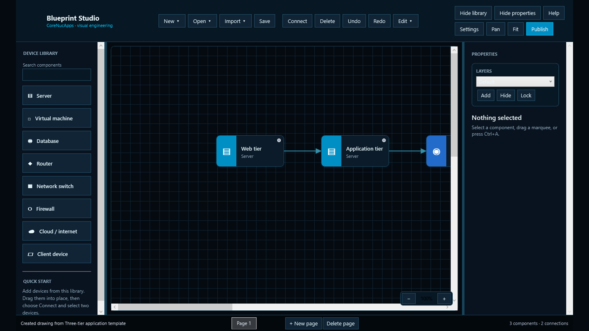

Infrastructure diagrams
Map servers, virtual machines, databases, routers, switches, firewalls, cloud services, and client devices with routed, directional connections.
Visual engineering for Windows
Create professional network, database, software, workflow, mechanical, electrical, and floor-plan diagrams in one focused desktop studio.

Editable. Local. Publication ready.One studio, many disciplines
Start from a purpose-built workspace, a reusable template, or information you already have. Every project shares the same precise editing, organization, and publishing tools.
Map servers, virtual machines, databases, routers, switches, firewalls, cloud services, and client devices with routed, directional connections.
Connect read-only to SQL Server, PostgreSQL, MySQL/MariaDB, Oracle, or SQLite and turn selected schema objects into editable relationship diagrams.
Analyze C# projects locally to reveal APIs, services, repositories, entities, data stores, dependencies, calls, and outbound HTTP flows.
Validate branches and termination paths, then generate a complete asynchronous C# state-machine project with dependency-injection hooks.
Create mechanical layouts and electrical schematics with dimensions, rotation, units, circuit symbols, labeled wiring, and reusable components.
Lay out rooms, walls, doors, windows, stairs, fixtures, and furniture with exact architectural dimensions in feet, inches, or millimeters.
From source to diagram
Import read-only AWS inventory, map a spreadsheet, analyze a C# solution, inspect a live database schema, or rebuild a compatible workflow from source.
Place, resize, rotate, group, lock, align, and distribute components. Add pages and layers, edit properties, and route labeled connectors around the drawing.
Atomic saves, undo and redo, portable versioned project files, 30-second recovery snapshots, recent files, and reusable templates keep work dependable.
Produce high-resolution PNG, scalable SVG, multi-page PDF, branded inventory reports, and printed pages with title blocks, legends, and page controls.
Private by design
Blueprint Studio has no advertising, analytics, telemetry, or CoreNucApps cloud account. Drawings, source code, spreadsheet data, credentials, and diagnostic logs are not automatically sent to CoreNucApps. Network access happens only when you choose an AWS or database import.
Support
Use the complete Blueprint Studio help guide for setup and workflows, or email mthomps19692003@outlook.com with a question or feedback.